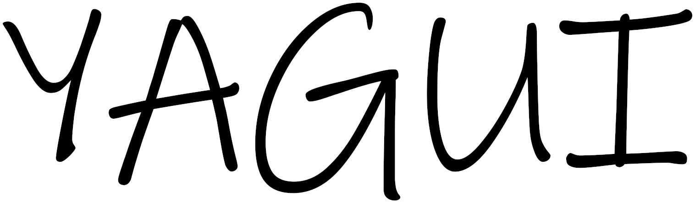

Welcome to YAGUI Documentation v0.5

What does YAGUI stand for? YAGUI stands for "Yet Another Graphical User Interface", this library tries to make GUIs easier to make and more powerful by having these objectives:
- Has a Loop that makes easier event management;
- Can draw and get events from multiple monitors;
- Has a screen buffer which makes possible to simulate transparency when drawing;
- Has a rednet based wireless screen sharing system (Wireless Screen Share, WSS).
Terminal Arguments
Terminal arguments are options with which you can launch the library to get information or make a new project easily.
helpPrints a list of available Terminal Arguments.infoPrints informations about the library.verPrints the version of the library.copyrightPrints library's copyright.setupSets up the library by creating a new CraftOS's setting which stores the path to the library, should be used every time you move the library and the first time you download it.create <PATH>Creates a new YAGUI project atPATH, a new project contains the code needed to load the library.
Download & Installation
There are two main ways of downloading the library:
- Downloading it from Raw GitHub using
wget. - Running
pastebin run 5qQ6t6ZXon the terminal.
By doing it with the first method you just download the library, by doing it with the second one you also get some examples to try as soon as you've set up the library.
After you've downloaded it you should run it with setup argument to install it.
Library Syntax
You should probably know how to load the library, you can use either dofile or require, so you should put the name of the variable where you've stored the library in front of everything that you need to access from it separated with a . (e.g. YAGUI.KEY_UP).
Everything in the library is snake_cased (e.g. string_utils), except for "classes" that are CamelCased (e.g. Loop), callbacks that are lowerCamelCased (e.g. Loop.callbacks.onClock) and constants that are UPPERCASED (e.g. ONCLOCK) or SCREAMING_SNAKE_CASED (e.g. KEY_UP).
Most of the functions of the library need to be called like this table:function() or table.function(table), except for functions that are in tables that have "_utils" at the end of their name.